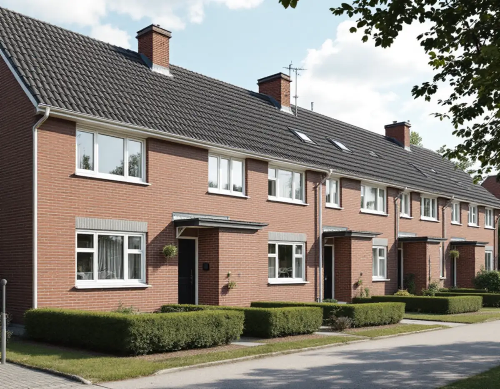
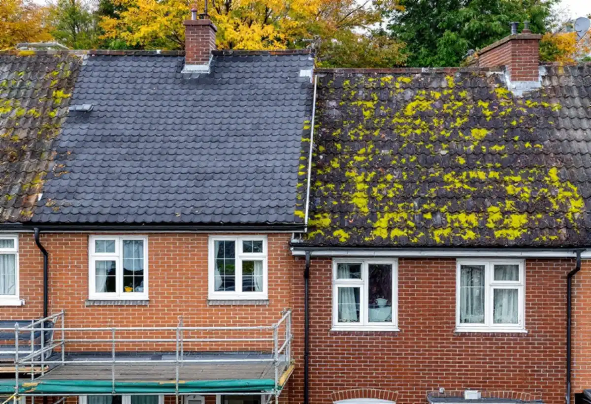
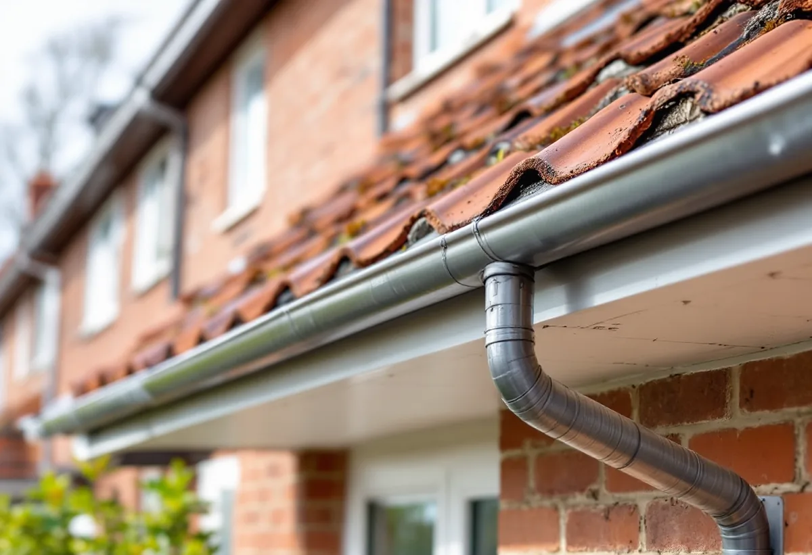

Ägarform och stadgar
Vi reder ut vem som beställer och vad stadgarna säger om taket.
På ett radhus i Farsta är första frågan inte vilket takmaterial du ska välja utan vem som beställer takbytet: du, grannarna i längan eller bostadsrättsföreningen. Geal Entreprenad AB byter tak på radhus, kedjehus och villor i Farsta och tar fram ett underlag som passar den som ska fatta beslutet.

Farsta stod klart 1961 som en av stadens tunnelbanestadsdelar. Enligt stadens strategi för småhusområden placerades de högre husen närmast centrum och tunnelbanestationen, och längst ut kom grupper av rad- och kedjehus. Farsta planerades i stor utsträckning för bilen, med stora parkeringsplatser vid centrum och en mer öppen struktur än i Vällingby.
Strategin beskriver gestaltningen i Farsta som präglad av höga ambitioner, med fasader i rött tegel men också puts och skivor i fibercement. Husen i en grupp byggdes ofta likadana, och strategins tabell markerar tunnelbanestaden Farsta som kulturhistoriskt värdefull miljö. Ett tak som ser annorlunda ut än grannarnas syns därför i hela gruppen.

Stadens områdesfakta för 2025 visar att Farstas småhus ägs på olika sätt. I Farsta strand finns 291 småhus med äganderätt och 31 med bostadsrätt, i Larsboda 131 respektive 65 och i Hökarängen 91 med äganderätt men 232 med bostadsrätt. I hela Farsta stadsdelsområde är 3 806 småhus äganderätter och 639 bostadsrätter.
Äger du ditt radhus beställer du själv, men eftersom taken i en länga hänger ihop lönar det sig att prata med grannarna innan materialet väljs. Bor du i en bostadsrätt avgör föreningens stadgar vem som svarar för taket. Bostadsrättslagen säger att du håller lägenheten i gott skick på egen bekostnad, om inte stadgarna bestämmer något annat, och ingrepp i bärande konstruktion kräver styrelsens tillstånd.
Stadens strategi ger rådet att förändra sammanhållna grupper av småhus utifrån ett helhetsperspektiv och att ta tillvara eller återskapa karaktärsskapande material och kulörer. För ett radhustak betyder det i praktiken samma takmaterial, samma kulör och samma detaljer vid takfot och nock som grannarna, även när husen byts vid olika tillfällen.
När flera hus i längan byts samtidigt kan ställning, avfallshantering och leveranser samordnas, och anslutningarna mellan husen görs i ett svep. När bara ett hus byts lägger vi särskild vikt vid anslutningen mot grannens tak, så att skarven blir tät och vattnet leds rätt. Om tjänsten i stort kan du läsa under takbyte.
Att byta taktäckningsmaterial räknas som fasadändring. På ett en- eller tvåbostadshus krävs normalt inget bygglov, men Stockholms stad påpekar att utökad lovplikt gäller i särskilt kulturhistoriskt värdefulla byggnader och områden. Stadsmuseets klassificeringskarta ger en första indikation på om din fastighet berörs.
Byter du till samma material och utförande som förut är det underhåll och ingen fasadändring. Därför börjar vi med att ta reda på vad som ligger på taket i dag och vad grannarna har. Om husen i Farsta och vanliga takproblem kan du läsa under takläggare i Farsta.
Ett beslut om takbyte i en förening eller en länga blir enklare med ett gemensamt underlag. Vi beskriver takets skick hus för hus, vad som behöver bytas under pannorna och hur arbetet kan delas upp i etapper.
Kostnadsförslaget delar vi upp så att varje hus eller etapp går att läsa för sig. Då kan styrelsen eller grannarna se vad som är gemensamt, som ställning och etablering, och vad som hör till varje tak.

Vi reder ut vem som beställer och vad stadgarna säger om taket.
Taket, anslutningarna mot grannarna och detaljerna går vi igenom.
Uppdelat per hus eller etapp, med gemensamma poster för sig.
Stadsmuseets karta kontrolleras om materialet ska bytas.
Gammalt tak rivs, underlaget ses över och nytt tak läggs.
Vi går igenom taket och anslutningarna med dig eller styrelsen.
Skatteverket räknar byte och reparation av takpannor och hängrännor på ett småhus som rotarbete. I en bostadsrätt gäller andra regler: arbetet ska utföras i bostaden och gälla det du ansvarar för enligt stadgarna, och arbete på gemensamma ytor som tak och fasader ger inget rotavdrag.
Avdraget är högst 30 procent av arbetskostnaden, högst 50 000 kronor per person och år och högst 75 000 kronor tillsammans med rutavdrag. Material och resor ger inget avdrag. Geal drar avdraget direkt på fakturan.
Takets yta, materialet, hur mycket underlag som behöver bytas, anslutningarna mot grannhusen och om flera hus byts samtidigt. En överblick finns i vad kostar ett takbyte. Efter ett gratis platsbesök får du ett skriftligt kostnadsförslag.
Byte av tegel-, betong- och plåttak.
Takbyte →Takbyte, takbesiktning och plåtarbeten.
Takläggare i Farsta →ABC-staden, radhus och asbest i våtrummet.
Badrumsrenovering i Farsta →Tegel, puts, skivor och trädetaljer.
Fasadmålning i Farsta →Radhus, grupphus och fasadskivor.
Fasadrenovering i Farsta →Linoleum, plastgolv och klinker i småstugan.
Golvläggare i Farsta →Slipa trägolvet och gå igenom resultatet.
Golvslipning i Farsta →Småstugor, ädelputs och radhus i Söderort.
Målare i Farsta →Skorstensbeslag och plåttak i Farsta.
Plåtslagare i Farsta →Förråd, gäststuga och skärmtak vid småstugan.
Snickare i Farsta →Tapet i 1960-talets lägenheter.
Tapetsering i Farsta →Småstugorna och typritningarna.
Totalrenovering i Farsta →